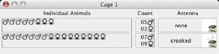

Instructions for using VGL
Contents:
Purpose of this document:
These instructions are intended to introduce you to the capabilities of VGL as you work
through a simple problem. VGL is capable of generating much more complex problems;
see How can I try a different/harder problem? for details.
What is VGL?
VGL is a simulation of genetics in a hypothetical fly-like organism. It is designed to
help students learn about genetics by applying their knowledge to novel problem
situations. Users develop their own genetic hypotheses and test them by designing, conducting,
and interpreting genetic crosses.
Each time you start a new problem in VGL, the software randomly chooses a character
(for example: eye color) and two traits of that character (for example: red eyes and blue eyes).
The software then chooses randomly which trait will be dominant and which will be recessive.
Since the problems are generated randomly, each time you start the program the problem
will be different.
You solve the problem by determining which of the two traits is dominant and which is recessive.
You do this by mating (a.k.a. crossing) pairs of creatures from the cages that VGL
generates. The results of each mating provide information to help you determine which is
recessive and which is dominant. You can mate any male-female pair you like; it is up to you
to choose the crosses and decide what they mean. You must also decide when you have collected
enough evidence to be convinced of your answer.
VGL can create problems involving complex modes of inheritance (sex-linkage, incomplete
dominance, multiple alleles, etc.); see How can I try a different/harder problem?
for more details.
How do I use VGL?
If you have just launched VGL, you should be seeing three things:
- These Instructions.
- A large window entitled "Virtual Genetics Lab" with some menus and a toolbar of buttons at
at the top left. This the main VGL window; the menus and buttons allow you to control
the program.
- A small window marked "Cage 1". This is the cage with your starting population of
creatures.
Here is what to do:
- Look at Cage 1. It will look something like this:

Note that, since each problem is generated randomly, your particular character,
traits, and quantities will likely be different. This cage shows several important
facts; reading from right to left:
- The character is antennae.
- The two antenna traits are none and crooked. You can click on the
small pictures to see an enlarged view.
- There are 5 males and 3 females with no antennae; there are 7 males and 9 females
with crooked antennae. These individuals were generated randomly, so it is not
possible to infer anything from these numbers.
- The male and female symbols in the left-most column reprsent individual creatures
that you can choose from when designing crosses.
- Select a male creature and a female creature from Cage 1 by clicking on them.
Their symbols will become highlighted. You can choose any combination you like (this
is the beauty of VGL: you must choose your own path of investigation), it is not possible
to know a priori which will give you useful information and which will not.
- Click "CROSS" button in the VGL toolbar. VGL will then generate Cage 2 with the offspring
of the parents that you have selected.
- Continue crossing until you have decided which trait is dominant and which is recessive.
You can choose any male from any cage and any female from any cage for your crosses.
A very brief introduction to Genetics: or, "How can I tell if it is dominant
or recessive?
Some important principles:
- Genetic characters are encoded by genes. For example, there is one gene
for antenna shape.
- Genes can have alternative forms called alleles. Each allele corresponds
to a particular trait. For example, there is a none allele of the
antenna gene and a crooked allele of the antenna gene. These alleles are often
symbolized by upper- and lower-case versions of the same letter. Typically, the
upper-case letter is used for the dominant allele and the lower-case letter for the
recessive allele.
- Every creature has two alleles, one from its mother and one from its father.
- Every father gives one of his alleles to each of his offspring. Evedry mother gives
one of her alleles to each of her offspring. These alleles are chosen randomly
from the alleles that each mother and father carries.
- The creature's appearance (its phenotype) depends on the particular pair of alleles
it contains (its genotype). For example, suppose that the none allele
were dominant (symbol: "N") and the crooked allele were recessive (symbol: "n").
Then:
- A creature with two N's ("NN") would have only none instructions for making
antennae, so it would have no antennae.
- A creature with two n's ("nn") would have only crooked instructions for
making antennae, so it would have crooked antennae.
- A creature with one of each allele ("Nn") has a mix of both none and
crooked information. In this case, the result is neither intermediate
nor a random choice of either, but always that of the dominant allele. Therefore
Nn individuals would have no antennae and have exactly the same exterior
appearance as NN individuals.
Using these principles, you can figure out which is dominant and
which is recessive. While some crosses are uninformative (they do not clearly distinguish
between possible models), others give quite a bit of information.
Suppose you have two traits, A and B. The following crosses give
conclusive results (you can work out the details for yourself):
- A cross A gives a mixture of A and B. This means that the "B was hiding in the
A's" - in other words, "B is recessive".
- A cross B gives only A. This means that "A wins out over B" - in other words,
"B is recessive".
How can I try a different/harder problem?
VGL can generate problems with more complex genetic models.
VGL generates problems based on Problem Type Files which restrict the range of
genetic models available. To start a new problem of the same or increased difficulty:
- From the "File" menu, choose "Close work".
- Close without saving work.
- From the "File" menu, choose "New Problem".
- The 10 files there specify problems of increasing levels of difficulty.
Click on the one you want and click "OK".
- Your problem will start.
This demo version of VGL automatically starts with a Level 02
problem. The chart below shows the different problem types. Note that, in "Practice
Mode", you can see the underlying genetic model and the genotype of each creature; the
Help file has details (from the "Help" menu, choose "Help File".).
| |
|
Dominance Model |
Chromosomal Location |
| Level |
Practice Mode |
Simple |
Incomplete |
3-alleles: A>B>C |
3-alleles: A>B; B>C; C>A |
Autosomal |
XX female;XY male |
ZZ male; ZW female |
| 1 |
Yes |
Yes |
|
|
|
Yes |
|
|
| 2 |
|
Yes |
|
|
|
Yes |
|
|
| 3 |
Yes |
Yes |
|
|
|
Yes |
Yes |
|
| 4 |
|
Yes |
|
|
|
Yes |
Yes |
|
| 5 |
Yes |
Yes |
Yes |
|
|
Yes |
Yes |
Yes |
| 6 |
|
Yes |
Yes |
|
|
Yes |
Yes |
Yes |
| 7 |
Yes |
Yes |
Yes |
Yes |
Yes |
Yes |
|
|
| 8 |
|
Yes |
Yes |
Yes |
Yes |
Yes |
|
|
| 9 |
Yes |
Yes |
Yes |
Yes |
Yes |
Yes |
Yes |
Yes |
| 10 |
|
Yes |
Yes |
Yes |
Yes |
Yes |
Yes |
Yes |